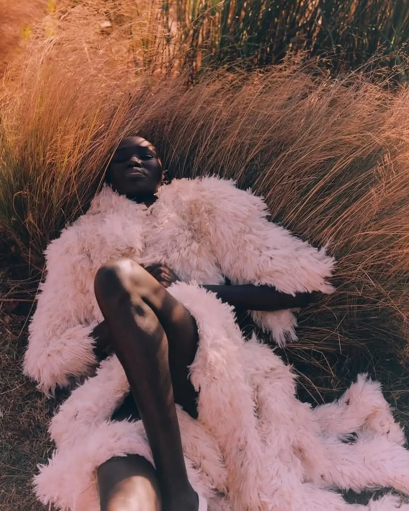

Número 07 · doce autores, una temporada
La ropa actúa primero
Dirección de arte
Ilustración
Puesta en escena, no catálogo
(01) El número
Doce autores montan la misma escena. Ninguno la resuelve igual.
(02) Ilustración · seis encargos
